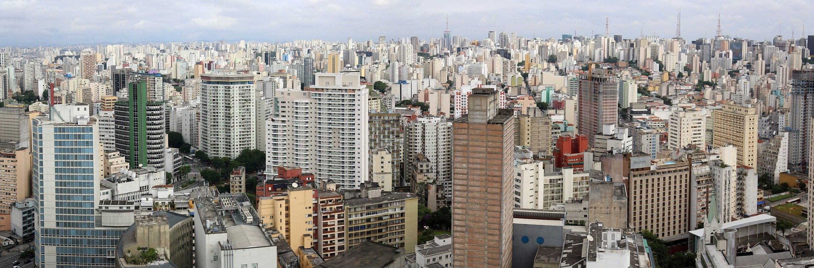

São Paulo, city, is the capital of the state São Paulo, located in southeastern Brazil. The city is known for being the industrial center in Latin America, along with being the economic center for Brazil, but also for the continent. Found on a plateau, the city itself is only a short distance from beaches along the Atlantic Ocean (1-4 hour drive depending on what beach). Rio de Janeiro is not that far either, 350km away to be specific, a 30-45 minute plane ride from Congonhas to Santos Dumont and you’re in the heart of Rio de Janeiro. Sao Paulo is one of the largest cities AND has one of the fastest-growing metropolitan populations in the world. This is all due to coffee, the state had prime land to farm coffee, which soon became Brazil’s main export, allowed São Paulo to grow and industrialize.
Source
As a local: São Paulo is known for being a metropolitan hub, business city, but we also have a lot of culture; from incredible museums, soccer stadiums, along with historical LGBTQ+ parades along Avenida Paulista. There is much more to São Paulo than the brief description I have provided above, and therefore I have created this website to showcase something not known to many, except to those who have visited. And that is …. THE FOOD IS AMAZING. Regardless of how much you want to spend, where you eat, what you want to eat, you will be amazed at the quality of the food being served. Anyway, this website is here to inform you about the restaurants I have visited and have deemed high quality and would recommend - I am in no way a professional at this and this is not a ranking per se but more of a ‘places you should go’ list.